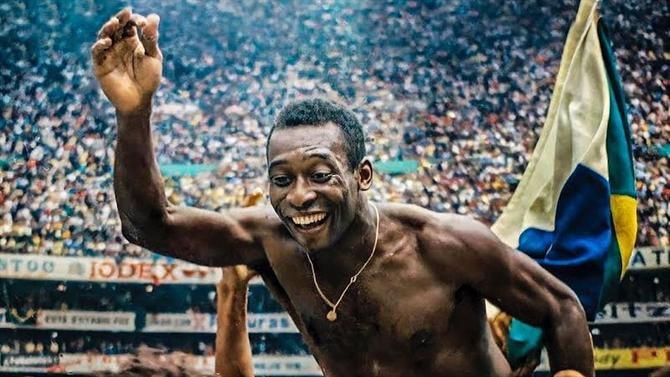
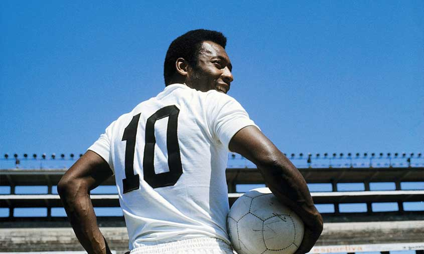
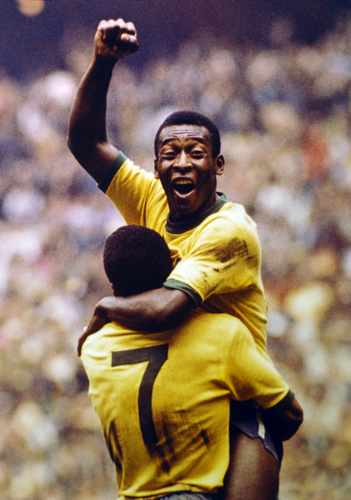
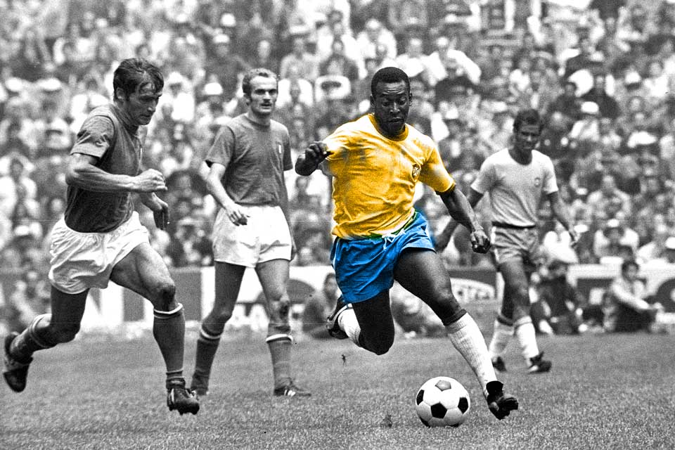

The Best



PELÉ, O REI DO FUTEBOL
Edson Arantes do Nascimento, conhecido como Pelé (1940–2022), foi um lendário futebolista brasileiro, amplamente considerado o maior jogador da história do futebol. Nascido em Três Corações, começou sua carreira no Santos FC aos 15 anos e, aos 16, estreou na Seleção Brasileira. Ele é o único jogador a vencer três Copas do Mundo (1958, 1962 e 1970). Pelé marcou 767 gols em jogos oficiais, e 1.283 no total incluindo jogos não oficias, um recorde mundial.
Além de seus feitos em campo, Pelé foi um embaixador do futebol após se aposentar em 1977, ocupando cargos como Ministro do Esporte no Brasil. Suas habilidades incluíam chutes precisos com ambos os pés, visão de jogo, e qualidade no drible, o que o tornava um jogador completo. No Brasil, é considerado um herói nacional por suas conquistas e defesa de melhorias sociais para os pobres. Pelé enfrentou diversos problemas de saúde nos últimos anos, incluindo um câncer de cólon, que o levou à morte em 29 de dezembro de 2022. Sua contribuição ao futebol e sua popularidade mundial garantiram-lhe o título de "Rei do Futebol".- Campeonato Brasileiro: 1961, 1962, 1963, 1964, 1965, 1968
- Recopa dos Campeões Intercontinentais: 1968
- Copa Libertadores da América: 1962, 1963
- Copa Intercontinental: 1962, 1963
- Campeonato Paulista de Futebol: 1958, 1960, 1961, 1962, 1964, 1965, 1967, 1968, 1969, 1973
- Torneio Rio–São Paulo: 1959, 1963, 1964
- North American Soccer League: 1977
- Copa do Mundo FIFA: 1958, 1962, 1970
- Taça do Atlântico: 1960
- Copa Roca: 1957, 1963
- Taça Oswaldo Cruz: 1958, 1962, 1968
- Taça Bernardo O'Higgins: 1959